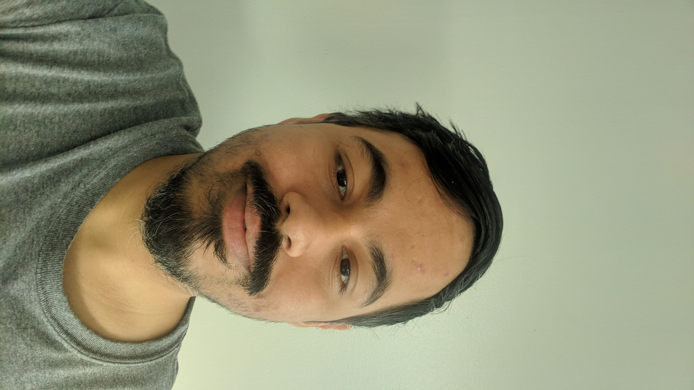

|  | Shivam Handa
Before joining MIT, I worked as a Research Fellow
at
Microsoft Research India working with Dr. Ganesan Ramalingam . I completed my undergraduate studies at IIT Delhi with a major in Computer Science. I was advised by Prof. Sorav Bansal for my undergraduate thesis. Here is my resume. |
My research interests lie in the intersection of Programming Languages and Machine Learning. Currently, I am working on modifying program synthesis to work noisy datasets. I have also dabble is formalizing aspects of large data processing systems.
I have been fortunate to work with some great researchers: